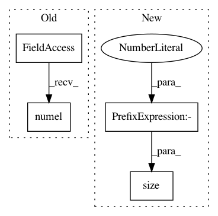

b24e13ad3ca193a2e3b84350d19199bdf17df45f,gpytorch/functions/_inv_quad.py,,_solve,#Any#Any#Any#,8
Before Change
def _solve(lazy_tsr, rhs, preconditioner):
if settings.fast_computations.solves.off() or settings.fast_computations.log_prob.off() or \
lazy_tsr.matrix_shape.numel() <= settings.max_cholesky_numel.value():
return lazy_tsr._cholesky()._cholesky_solve(rhs)
else:
return lazy_tsr._solve(rhs, preconditioner)
After Change
def _solve(lazy_tsr, rhs, preconditioner):
if settings.fast_computations.solves.off() or settings.fast_computations.log_prob.off() or \
lazy_tsr.size(-1) <= settings.max_cholesky_size.value():
return lazy_tsr._cholesky()._cholesky_solve(rhs)
else:
return lazy_tsr._solve(rhs, preconditioner)
In pattern: SUPERPATTERN
Frequency: 4
Non-data size: 4
Instances
Project Name: cornellius-gp/gpytorch
Commit Name: b24e13ad3ca193a2e3b84350d19199bdf17df45f
Time: 2019-03-25
Author: gpleiss@gmail.com
File Name: gpytorch/functions/_inv_quad.py
Class Name:
Method Name: _solve
Project Name: cornellius-gp/gpytorch
Commit Name: b24e13ad3ca193a2e3b84350d19199bdf17df45f
Time: 2019-03-25
Author: gpleiss@gmail.com
File Name: gpytorch/functions/_inv_matmul.py
Class Name:
Method Name: _solve
Project Name: cornellius-gp/gpytorch
Commit Name: b24e13ad3ca193a2e3b84350d19199bdf17df45f
Time: 2019-03-25
Author: gpleiss@gmail.com
File Name: gpytorch/lazy/lazy_tensor.py
Class Name: LazyTensor
Method Name: inv_quad_logdet
Project Name: cornellius-gp/gpytorch
Commit Name: b24e13ad3ca193a2e3b84350d19199bdf17df45f
Time: 2019-03-25
Author: gpleiss@gmail.com
File Name: gpytorch/lazy/lazy_tensor.py
Class Name: LazyTensor
Method Name: root_decomposition